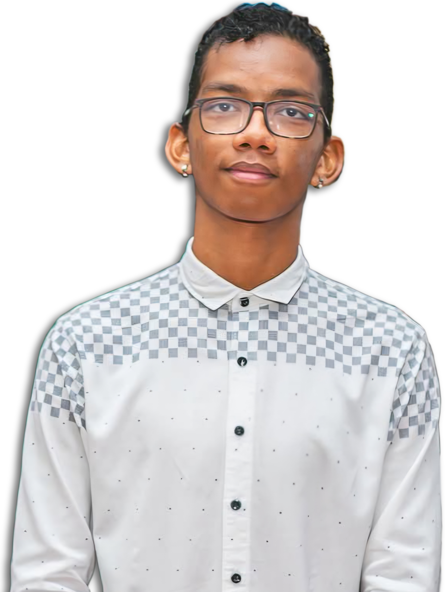

I never originally intended to become a software developer. In Suriname, software development is not always viewed as a widely known career path, so growing up, I was not fully aware of the opportunities within the field. My first introduction to programming happened during the second grade of middle school, where I became fascinated by the idea of communicating with computers and creating actions through code. What started as curiosity quickly turned into a passion, especially the excitement of understanding systems and building things from scratch.
During my first year of high school, I discovered Software Development as a study option within the ICT sector and immediately knew it was the path I wanted to pursue. Since then, programming has become much more than simply writing code - it has become a way to solve problems, help others, and create meaningful impact through technology. I enjoy both the creative and challenging sides of development, from building digital solutions to spending hours solving a single issue, because to me every problem is an opportunity to learn, improve, and contribute to the future through innovation.
My philosophy is simple: "the sky is the limit, but no matter how far it may seem, everything can be broken down into something understandable and reachable."
I believe that technology should not only be powerful, but also practical, secure, and meaningful. Whether developing software, solving technical problems, or helping others through digital solutions, I focus on approaching every challenge with patience, logic, and continuous improvement.